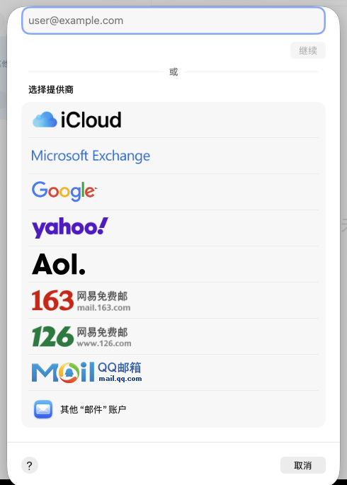
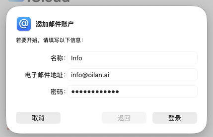
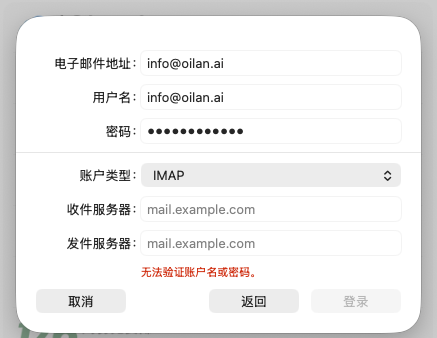
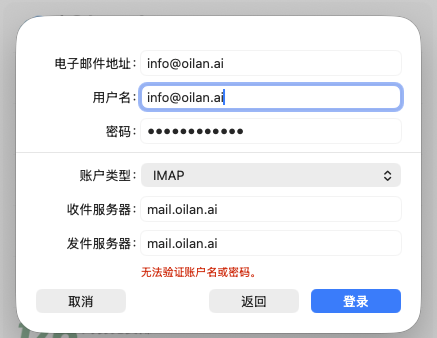
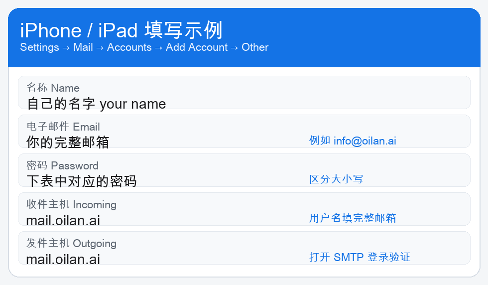
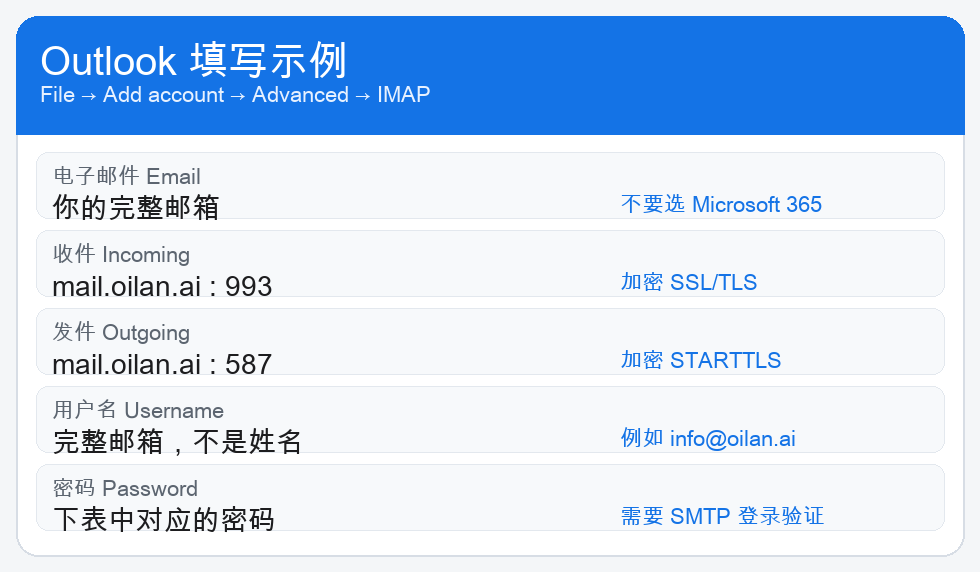
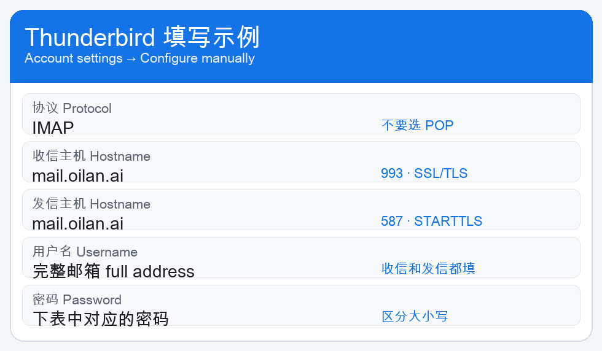

这份手册给使用 @oilan.ai 邮箱的人。下面有你的邮箱和密码。请只登录自己的那一行，不要使用同事的密码。
Your mailbox and password are in the table below. Sign in only with your own row.
密码必须和表里完全一样，区分大小写，前后不要有空格。邮箱地址用小写即可。
The password is case-sensitive and must match the table exactly. The address can be lowercase.
| 邮箱 Email | 密码 Password | 说明 |
|---|---|---|
baurzhan.nurahan@oilan.ai | baurzhan.nurahan | |
gulnar.kanat@oilan.ai | gulnar.kanat | |
nurzhamal.makulbekova@oilan.ai | Nurzhamal.makulbekova | 密码里有大写字母 |
moldabayev.alisher@oilan.ai | Moldabayev.Alisher | 密码里有大写字母 |
yermek.abilgaziyev@oilan.ai | yermek.abilgaziyev | |
info@oilan.ai | Oilan@123456 | 公共邮箱 |
kuanysh.adil@oilan.ai | Kuanysh.Adil | 密码里有大写字母 |
support@oilan.ai | support | 收信会同时抄送给同事 |
ai@oilan.ai | Ab123456 |
用户名永远填完整邮箱，例如 info@oilan.ai。不要只填姓名。
The username is always the full address. Do not enter only a name.
Apple 邮件、iPhone 邮件、Outlook、Thunderbird 都填下面这五项。Foxmail、QQ 邮箱、网易邮箱大师也用这一套，选择“其他邮箱”或 IMAP，不要用 QQ 号或网易号登录。
证书名称是 *.oilan.ai。系统如果询问是否信任，确认是这个名称后再继续。
下面四张图都是 Mac“邮件”的真实界面。例子用的是 info@oilan.ai。你把自己的邮箱和密码换进去。
打开“邮件”。点屏幕最上方菜单栏的“邮件”，选择“添加账户…”。
Open Mail. In the menu bar choose Mail → Add Account.
不要选 iCloud、Microsoft Exchange、Google、Yahoo、AOL、163、126 或 QQ 邮箱。列表往下，点最后一项「其他“邮件”账户」。不要点“继续”。
Do not choose a public provider. Scroll to the bottom and choose Other Mail Account. Do not click Continue.

名称填你的名字。电子邮件地址填完整邮箱。密码填上表里你自己的密码，输入后显示为圆点。然后点“登录”。

下一页账户类型保持 IMAP。如果收件服务器和发件服务器是 mail.example.com，登录会失败，并出现红色字“无法验证账户名或密码”。

把这四项改成：
mail.oilan.aimail.oilan.ai改完后点蓝色的“登录”。图里的红色提示是上一次还填着 mail.example.com 时留下的，字段改对后再点一次登录。

账户出现在左侧边栏后，就可以收信和发信。
mail.oilan.ai，用户名填完整邮箱。mail.oilan.ai，用户名和密码再填一次。Settings → Mail → Accounts → Add Account → Other → Add Mail Account. Choose IMAP. Both host names are mail.oilan.ai.

File → Add Account → Advanced setup → IMAP. Do not choose Microsoft 365.

mail.oilan.ai，端口 993，连接安全性 SSL/TLS。mail.oilan.ai，端口 587，连接安全性 STARTTLS。也可以用 465 和 SSL/TLS。Create an email account, then choose Configure manually. Do not accept the automatic lookup.

收信使用 IMAP。邮件留在服务器上，手机和电脑看到的是同一封信。发信必须登录。发件人要和登录的邮箱一致。
写给 support@oilan.ai 的信会留在 support 邮箱里，并同时出现在这些邮箱中：baurzhan.nurahan、gulnar.kanat、nurzhamal.makulbekova、moldabayev.alisher、yermek.abilgaziyev、info、kuanysh.adil。不需要发信人再逐个添加收件人。ai@oilan.ai 不在这份抄送名单里。
Mail sent to support@oilan.ai stays in support and is also copied to those seven mailboxes. ai@oilan.ai is not on that copy list.
| 现象 | 处理 |
|---|---|
| 提示密码错误或无法验证 | 用户名改成完整邮箱，服务器改成 mail.oilan.ai，再重新输入表里的密码。 |
| 服务器是 mail.example.com | 收件和发件都改成 mail.oilan.ai。 |
| 选成了 QQ、163、Gmail 或 iCloud | 返回，改选“其他邮件账户”或 IMAP。 |
| 能收信但不能发信 | 发件端口用 587 和 STARTTLS，或 465 和 SSL/TLS，并打开 SMTP 登录验证。 |
| 证书提示 | 确认名称是 *.oilan.ai 后再信任。 |